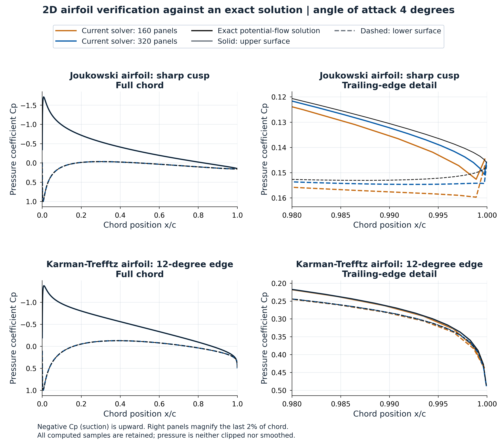
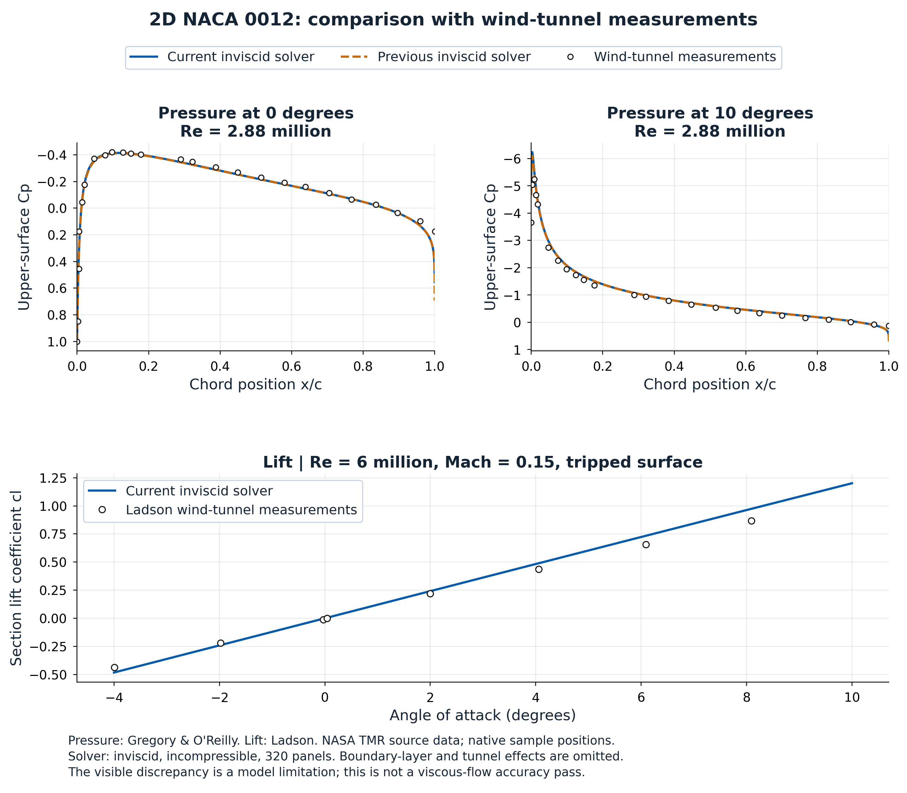

← Wing AeroStructHistorical validation snapshot before the 3D revision
29 October 2026 · 2D airfoil and finite-thickness 3D wing · reproducible tests and signed physical profiles
Version-specific results. The public 3D solver remains 0.3.1. The quadratic-doublet results below are an experimental checkpoint, not a released replacement. Checkpoint 7 corrects a pressure-recovery inconsistency; unresolved tip and torque tests still prevent release. The 2D solver has independently reviewed trailing-edge repair v1.1.0. Experimental comparison below also shows its inviscid model limits.
2D airfoil: repaired trailing edge
The released independent 2D solver is version 1.1.0. Exact Joukowski-cusp and 12° Karman–Trefftz flows test the complete pressure profile at matching physical points, four angles (−4°, 0°, 4°, 8°) and 80/160/320 total panels. The main figure shows the repaired solver; superseded defect plots are kept separately as historical diagnostics.

α = 4°. All computed samples retained, including the last three panels. The magnified plots use local axes. No pressure point is clipped, smoothed or replaced by a reference value.
| Profile | Panels | |Δcl| | Cp RMS, 2–98% chord | Last-panel |ΔCp| | Last 3 panels, max |ΔCp| |
|---|
| joukowski (cusp) | 80 | 0.000175 | 0.00278 | 0.00293 | 0.0165 |
| joukowski (cusp) | 160 | 4.99e-05 | 0.000739 | 0.00135 | 0.01 |
| joukowski (cusp) | 320 | 1.31e-05 | 0.00022 | 0.00064 | 0.00587 |
| karman-trefftz 12 deg (finite wedge) | 80 | 0.00018 | 0.00144 | 0.00227 | 0.0107 |
| karman-trefftz 12 deg (finite wedge) | 160 | 5.21e-05 | 0.000388 | 0.000921 | 0.00832 |
| karman-trefftz 12 deg (finite wedge) | 320 | 1.38e-05 | 9.27e-05 | 0.000328 | 0.00678 |
For the 320-panel cusp at 4°, last-panel error falls from 0.531 to 0.000643. Interior Cp RMS is 0.000220 and lift error is 0.0000131. The second panel from the edge retains a small, slowly converging error; the last-three-panel column prevents that from being hidden by an interior statistic.
Formulation, residuals and integration
Linear vortex-sheet strength is solved using a constant stream function at contour nodes, the Kutta condition and an interior trailing-edge-bisector condition. This removes the spurious interior edge jet of the previous midpoint-only formulation. A cusp has finite nonstagnant edge speed; an exact finite wedge approaches stagnation only at the edge point. Neither case warrants manually setting the last computed Cp.
Zero net panel flux is a discrete boundary condition, not a claim that pointwise penetration vanishes everywhere. System / mean-flux residuals and midpoint normal-velocity residuals are reported separately. The latter is about 0.0014 V∞ at 320 panels in the cusp test. Public cl/cm retain midpoint-pressure quadrature; the API also reports exact quadratic-pressure integration and panel couples. Both are recorded in the raw results.
The original tests pass unchanged; independent focused tests include reversal of contour order and sensitivity to the interior closure location. Midpoint normal-velocity residuals and remaining near-edge errors are not renamed as exact accuracy. Source adaptation and the retained MIT notice are listed in third-party notices.
Repaired profiles PDF · Full exact-reference results · All signed Cp samples · Orientation / closure checks.
Independent software: XFOIL
Official MIT XFOIL 6.99 was executed locally, inviscid / Mach zero, using PCOP to preserve the exact supplied contours. The table compares repaired 2D results with the actual XFOIL runs. Its nodal Cp and the application’s segment-centre Cp are different sample locations; no equality is inferred from an overlaid picture.
| Case / panels / α | Application cl | XFOIL cl | Application cm¼ | XFOIL cm¼ |
|---|
| naca0012_160_a4 | 0.4826869 | 0.4825000 | -0.0054621 | -0.0054000 |
| naca0012_320_a4 | 0.4826466 | 0.4824000 | -0.0054435 | -0.0054000 |
| naca2412_160_a4 | 0.7416760 | 0.7413000 | -0.0612280 | -0.0612000 |
| naca2412_320_a4 | 0.7416633 | 0.7412000 | -0.0612128 | -0.0611000 |
Official Win32 XFOIL itself oscillates on the cusped test and one run has unreadable output. Exact conformal flow, rather than that unstable reference run, determines cusp accuracy. These reference failures remain recorded.
Historical defect diagnostics — previous 2D solver, not current validation
The superseded plots document the discovered defect and are excluded from the main presentation: previous exact-reference figure · previous cusp / XFOIL diagnostic · original raw reference runs. They are retained for traceability and must not be presented as results of 2D version 1.1.0.
Experimental comparison: NACA 0012
Upper-surface Cp is compared with Gregory & O’Reilly (R&M 3726), Re = 2.88 million, α = 0° and 10°. Lift is compared with Ladson (NASA TM 4074), Re = 6 million, M = 0.15, 180-grit tripped data. The official NASA TMR digitizations are retained at their original sample positions; their approximate digitization and different test conditions remain applicable.

Experimental points are open circles; continuous curves are solver predictions. Cp and lift come from different experiments and are identified separately. No synthetic experimental curve is inserted.
The incompressible inviscid model agrees reasonably with much of the pressure distribution but overpredicts the leading-edge suction peak at 10° and the measured lift slope. Near 4°, predicted cl ≈ 0.49 versus measured 0.4365: about 12% higher. Lift RMS discrepancy over the declared −4° to 10° comparison interval is 0.0534. This is a model limitation, not a demonstrated viscous-flow validation pass. No boundary-layer, roughness, tunnel or Mach correction was fitted to reduce it.
Application geometry is its standard closed-edge NACA 0012. The measured model has the conventional NACA profile; the thin trailing-edge closure differs slightly. The altered NASA TMR CFD geometry is not substituted and presented as the measured specimen. No stall, viscous drag or three-dimensional experimental validation is claimed.
Experimental figure PDF · Comparison data · Source files / hashes · Measured Cp · Measured forces · Official NASA TMR experimental-data description.
3D wing: PANAIR and previous solver
NACA 0012, rectangular wing, full span 1200 mm, chord 200 mm, AR = 6, α = 4°. The 32 × 24 setting is compared with stored PANAIR output. PANAIR was run externally; the local independent comparison reuses its raw output. Its abutment/corner warnings remain applicable. Native Cp control points differ slightly, so each curve keeps its own x/c. Application moments include each version’s actual integrated panel forces and couples. PANAIR Cm here uses its centroid Cp with common-area quadrature; it is an integration comparison, not an identical-point or identical-quadrature moment benchmark.
Experimental 3D profiles and unresolved tip diagnostics — not a release result
 Checkpoint 7 adds exact pressure couples. Local tip pressure and moment retain their disagreement; total lift convergence does not certify a tip extremum.
Checkpoint 7 adds exact pressure couples. Local tip pressure and moment retain their disagreement; total lift convergence does not certify a tip extremum.| Solver | Trefftz CL | Trefftz CDi | Cm¼ |
|---|
| Public 0.3.1 | 0.3133800 | 0.00530916 | 0.00101415 |
| Quadratic checkpoint 6 | 0.3170199 | 0.00541120 | -0.00030804 |
| PANAIR reference | 0.3165290 | 0.00540159 | -0.00006912 |
| Quadratic checkpoint 7 | 0.3170199 | 0.00541120 | -0.00018961 |
For this case, absolute relative disagreement with PANAIR falls from 0.995% to 0.155% in Trefftz CL and from 1.712% to 0.178% in CDi. These are case-specific results. Checkpoint 7’s Cm¼ changes from −0.000308 to −0.000190 (PANAIR common-area value −0.0000691). Local tip Cp and torque reliability still require validation.
What the experimental formulation changes
Doublet strength varies quadratically in chord and span. The physical triangle kernels integrate a P2 interpolant; body and wake traces match pointwise at the trailing edge. Off-body velocities are checked at common physical coordinates. Checkpoint 6 differentiated a parent mapped polynomial at a different point and normal. Checkpoint 7 instead differentiates the same physical P2 triangle polynomial used by the influence kernel, then integrates its quadratic pressure and moment exactly. A finite-dimensional internal Dirichlet condition is imposed at collocation points; interior leakage between them remains, particularly near the tip. The focused jump and quadrature tests pass independently, but this does not prove continuum accuracy at a sharp edge. No Cp clipping, smoothing, geometry trimming or relaxed acceptance threshold is used to hide it.
Off-body velocity and runtime
An independent 88-point, all-exact off-body test differentiates the solved potential. Halving the finite-difference step changes normalized velocity by at most 4.15 × 10⁻⁸. Interior velocity-component RMS disagreement with PANAIR changes from 0.005866 to 0.000320. The comparison preserves PANAIR printed precision and mesh differences.
The earlier independent checkpoint-6 Worker timing is retained in the data. Author-supplied checkpoint-7 timing is separate: three Chromium runs gave Standard median 8.36 → 7.37 s and Fine 24.08 → 24.33 s relative to 0.3.1. Its Node Fine median was 18.4% slower. Hardware and harness differ; these are not universal speedup claims.
Checks and remaining limits
Passing kernel tests establish implementation consistency; external profiles and mesh studies assess accuracy. Failed original criteria stay failed. Stored results from another numerical formulation are not silently regenerated to create passing tests.
| Original/focused suite | Independent checkpoint-7 outcome | Recorded failed criteria |
|---|
| test_wing_aero_tensor_doublet | Passed | — |
| test_wing_aero_span_doublet | Passed | — |
| test_wing_aero_kernels | Passed | — |
| test_wing_aero_closed_bodies | Passed | — |
| test_wing_aero_vlm | Passed | — |
| test_wing_aero_trefftz | Passed | — |
| test_wing_aero_transfer | Passed | — |
| test_wing_aero_conformal | Not passed | 2 |
| test_wing_aero_wing | Not passed | 1 |
| test_wing_aero_admission | Not passed | 82 |
| test_aerostruct_twist | Not passed | 18 |
| test_aerostruct_engine_fork | Not passed | — |
| test_aerostruct_study_io | Not passed | — |
The independent Windows-compatible IO rerun passes 51 AeroStruct checks and the unchanged 1062 Wing Lab checks. The only harness change is file-URL path conversion; numerical predicates and tolerances are unchanged. The engine’s independent six-component equilibrium checks pass; its final Unix diff utility is unavailable on this host. Original harness errors remain listed above as not passed. Harness portability is distinct from numerical accuracy. Admission and twist uncertainties remain release blockers. No viscous flow, transition, separation, stall, rolled-up wake or fluid–structure iteration is validated here.
Data and reproduction
Current 2D figure PDF · 3D figure PDF · Current 2D profiles CSV · Current 2D results · 3D full results · Original test receipts · Independent review
Current exact-edge reproduction script (save under application validation/; OUT selects the output folder) · Off-body samples · Browser timing receipts. Run the 2D reproduction script with Node.js from its saved validation folder; an optional command-line argument selects another application directory. It reads that application's actual source. Version and reference provenance · Separate checkpoint-7 timing · JSON compatibility receipt.
Reference formulations and provenance
PANAIR high-order panel method · MachLine panel formulation · Linear vortex-panel equations. Sharing the potential-flow method family does not establish identical accuracy or copied source code.
Public bundle SHA-256: 1b242ffe7126ea9c568ea3c47636c3d65bc8366afe1ba5e13cacc9f0cd2c650f. Experimental checkpoint 7 core SHA-256: 9a0d405ba35f4edb0e142ebd8dcb2f69c5627e9b0a93787f97a39f724776a695.